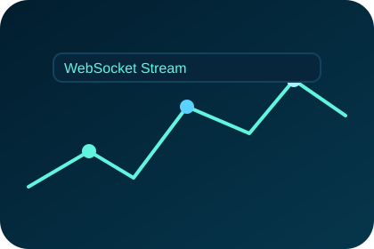

Architecture
Rust microservices stream RPC events over WebSockets into a Python strategy layer. Followers subscribe to vaults, and Anchor smart contracts guarantee revenue sharing without custody risk.
Crypto Automation - Product
Real-time copy-trading network on Solana where followers allocate to trusted vaults and receive mirrored trades with millisecond latency.

Rust microservices stream RPC events over WebSockets into a Python strategy layer. Followers subscribe to vaults, and Anchor smart contracts guarantee revenue sharing without custody risk.
Verified traders publish transparent track records. Followers allocate capital to a vault and mirror every transaction with continuous telemetry + alerting.
Non-custodial wallets, hardened RPC keys, and on-chain fees make the system resilient. Threat models cover reorgs, latency spikes, and malicious strategy code.
Built a Next.js dashboard featuring portfolio analytics, drawdown visualizations, and autopilot toggles so followers can pause mirrors instantly.
Interested in collaborating on on-chain finance or testing the beta?